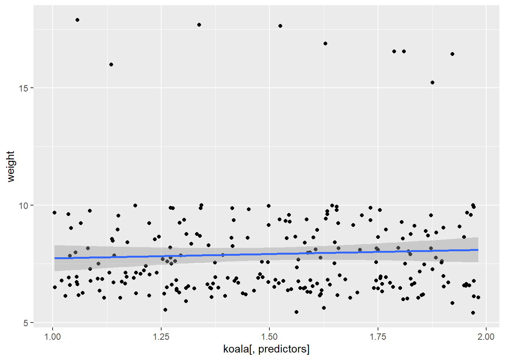
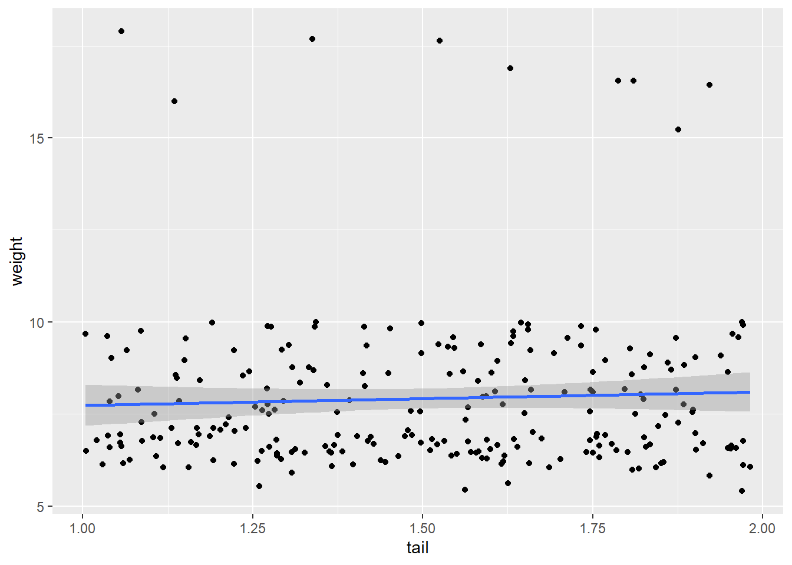

Chapter 8 Loops and apply
8.1 Introduction
Data analysis often requires repeating a particular function on multiple data observations, groups of observations, or separate data sets. Many novice users begin with the strategy of assigning a new variable for each input, or copying and pasting code. While this certainly works, it can be very time consuming and makes it easy to make silly mistakes. There are several alternative strategies that can be used to repeat tasks for multiple variables or data sets that avoid this risk.
In this tutorial, we will focus on the apply family of functions and introduce loops. We will build on the skills we learned in our previous tutorials using dplyr and ggplot2, so if you are unfamiliar with the tidyverse syntax, it would be helpful to review these sections.
8.2 So, what do you want to repeat?
For any given task, there are several possible approaches for how to repeat it. In general, the first point to consider is whether the order of iteration matters or if it does not matter.
What does this mean?
Let’s consider an example from our previous tutorial. We built a model using one predictor variable, but we would like to compare this model to models built using other predictor variables. In this situation, it doesn’t matter whether we build model A before we build model B– they are completely independent of each other. Here, the order of iteration does not matter.
Now consider a situation where our process has several steps. Perhaps we need to generate a data set A and save that data set to be used to calculate B, then use B to calculate C. In this situation, the sequence does matter.
In situations where the sequence does not matter, you can use apply functions. If the sequence does matter, you will need to use a loop.
8.3 DON’T USE A LOOP WHEN YOU CAN USE APPLY!
Loops can be very useful, but can be complicated, messy, and easy to break. They are also harder to troubleshoot. The loop may run without producing the desired output and it can be difficult to figure out why. It is FAR more common that the order of iteration does not matter, and even if it does matter, a well-written function can usually help you avoid needing a loop!
apply functions are simple and clean and more difficult to mess up! If you can use one instead of a loop, you should!
8.4 The apply family
Ok, so what is apply?
The apply functions are a set of functions that can be used to, well, apply functions to lists, dataframes, and matrices. apply functions are similar to loops, but have a much simpler syntax.
There are several different functions that can be used depending upon the inputs and desired outputs. These include:
apply- used with arrays, including matrices, and returns a vector, array, or list.sapply- (simplified apply) applies the function to each element of a vector, list, or matrix, and returns the outputs as a vector or matrix.lapply- (list apply) is similar tosapply, but returns a list of objects, rather than a vector.mapply- (multivariate apply) applies a function to the first elements of two or more vectors or lists, and then the second pair of elements, etc..
If this doesn’t make much sense, don’t stress! We will work through sapply and lapply.
8.4.1 sapply
Let’s take a quick look at our koala dataset.
## [1] "species" "X" "Y" "state" "region" "sex" "weight"
## [8] "size" "fur" "tail" "age" "color" "joey" "behav"
## [15] "obs"In a previous section, we built a linear model that predicted weight based on fur.
##
## Call:
## lm(formula = weight ~ fur, data = koala)
##
## Residuals:
## Min 1Q Median 3Q Max
## -3.8853 -1.0215 -0.2989 0.9245 8.4996
##
## Coefficients:
## Estimate Std. Error t value Pr(>|t|)
## (Intercept) 3.4409 0.4569 7.531 1.02e-12 ***
## fur 1.5477 0.1527 10.137 < 2e-16 ***
## ---
## Signif. codes: 0 '***' 0.001 '**' 0.01 '*' 0.05 '.' 0.1 ' ' 1
##
## Residual standard error: 1.792 on 240 degrees of freedom
## Multiple R-squared: 0.2998, Adjusted R-squared: 0.2969
## F-statistic: 102.8 on 1 and 240 DF, p-value: < 2.2e-16We would like to see whether one of our other numeric variables (size, tail length, or age) might be a better predictor for weight than fur. We could write three separate models, or we could make a basic function that tests out each of these variables and gives us our R-squared value.
Our linearmodel object has a number of items we can extract.
## [1] "call" "terms" "residuals" "coefficients"
## [5] "aliased" "sigma" "df" "r.squared"
## [9] "adj.r.squared" "fstatistic" "cov.unscaled"To view only the R-squared value we can use the following code:
## [1] 0.2997958We know that we want to run these two pieces of code several times, so let’s write a simple function that does it for us. In this situation, we are only going to change one thing– our predictor variable – so we will use that as the input for our function.
Let’s try!
model_fun <- function(predictors) {
linearmodel = lm(weight~koala[,predictors], data=koala) #The brackets select the column to use in the koala dataframe
summary(linearmodel)$r.squared
}What is it we want to get out of this function? Since we are only looking for the R-squared value for each model as a vector, this is a great time to use sapply (simple apply!)
First, let’s create our input list of the columns we would like to compare:
Now we can use sapply1 to build the model, extract the R-squared for each predictor
## [1] 0.235929039 0.299795840 0.002318631 0.002492435They’re all pretty bad, but now we know that age is the worst! :)
8.4.2 lapply
The lapply function works just like sapply, but you can use it if you are producing more complex data, like a plot or model or raster, that needs to be contained in a list.
Despite the fact our models performed terribly, we decide it would be interesting to plot them.
In this scenario, once again, the only thing we are changing is the predictor variable, so we can write our ggplot2 plot as a function, then run it using lapply:
plot_fun <- function(predictors) {
ggplot(data = koala, mapping = aes(x = koala[,predictors], y = weight)) +
geom_point() +
geom_smooth(method = "lm")
}
lapply(predictors, plot_fun)## [[1]]## `geom_smooth()` using formula 'y ~ x'
##
## [[2]]## `geom_smooth()` using formula 'y ~ x'
##
## [[3]]## `geom_smooth()` using formula 'y ~ x'
##
## [[4]]## `geom_smooth()` using formula 'y ~ x'
An advantage to this is that you can assign this to a variable and each plot will be saved to a list that you can come back to later.
While in these examples we’ve used user-defined functions, you can use this with whatever built-in functions you want!
## [1] "1 Apply functions are the best!" "2 Apply functions are the best!"
## [3] "3 Apply functions are the best!" "4 Apply functions are the best!"
## [5] "5 Apply functions are the best!"8.5 for loops
for loops are structures similar to functions that iterate through a chunk of code for a certain number of repetitions. The basic structure of a for loop looks something like this:
## [1] "R is so cool!"
## [1] "R is so cool!"
## [1] "R is so cool!"
## [1] "R is so cool!"
## [1] "R is so cool!"for loops start with the word for, and then in parentheses show the number of tasks and number of times it needs to be repeated. Next come curly brackets with the code that gets repeated.
Let’s go back to our R-squared example. We can do the same thing as we did using sapply
predictors <- c(8, 9, 10, 11)
model_fun <- function(predictors) {
linearmodel = lm(weight~koala[,predictors], data=koala)
return(summary(linearmodel)$r.squared)
}
for (i in 1:length(predictors)) { #"length" counts the number of items in the "predictors" vector
predictor <- predictors[i] #This selects the ith observation in the predictors vector
print(model_fun(predictor))
}## [1] 0.235929
## [1] 0.2997958
## [1] 0.002318631
## [1] 0.002492435While you get the exact same results, the loop is messier than sapply(predictors, plotfun), plus it can be some extra work to save the ouput from each iteration into a list or table, which is incredibly simple using lapply :)
(Am I biased or what? :P)
for loops are useful in situations where each iteration depends on the result of the previous iteration.
8.5.1 Some for loop hints
For some reason, i, j, and k are generally used in loops (while functions tend to use x and y). This is a good practice to get into just to avoid confusion.
It can be very annoying to constantly change the number of tasks based on your data set, so the
length()function makes sure you have the right number every time.Loops can be nice if the code you are running takes a long time and you may need to stop it and resume later. If you need to do tasks 1:400, you can stop the code and pick it up again at 200:400.
If you would like to save the output of a loop, you will need to create a blank table with the expected dimensions of your output values and then make the loop add the data to the table. Here is an example:
blank_matrix <- matrix(nrow = 5, ncol = 1)
for (i in 1:5){
text <- "R is so cool!"
blank_matrix [i, 1] <- text #This will assign the value of "text" to the ith row in the matrix
}
blank_matrix## [,1]
## [1,] "R is so cool!"
## [2,] "R is so cool!"
## [3,] "R is so cool!"
## [4,] "R is so cool!"
## [5,] "R is so cool!"8.5.2 Challenge
Our koalas are many different ages and we would like to build a separate linear model that predicts fur based on weight for each age group.
Build either a for loop or a function used with sapply that shows us the R-squared value for a linear model built for each age group
Hints:
Figure out how many unique ages there are (you can look at the table or use
unique()to get all the unique values in the column)Filter to create a subset of data for koala age (Hint: go back to the
dplyrsection if you can’t remember how!)Build your linear model using the subset of data
Think about which variable you will need to change each time to repeat this and build it into your loop or function
8.6 Solutions to challenge
ages <- 1:12
#Using a for loop:
for (i in 1:length(ages)){
#Select the ith age in the list of koala ages
current_age <- ages[i]
#Filter the data to get only the koalas of that age
age_subset <- koala %>% filter(age == current_age)
#Use lapply to get a list of each R-squared value for each predictor
linearmodel = lm(weight~fur, data=age_subset)
print(summary(linearmodel)$r.squared)
}## [1] 0.6488455
## [1] 0.133633
## [1] 0.2721374
## [1] 0.7552257
## [1] 0.871621
## [1] 0.152498
## [1] 0.1551334
## [1] 0.2999077
## [1] 0.1281452
## [1] 0.5103155
## [1] 0.1243552
## [1] 0.1586713#Using a function and lapply
challenge_fun <- function(ages) {
age_subset <- koala %>% filter(age == ages)
linearmodel = lm(weight~fur, data=age_subset)
summary(linearmodel)$r.squared
}
sapply(ages, challenge_fun)## [1] 0.6488455 0.1336330 0.2721374 0.7552257 0.8716210 0.1524980 0.1551334
## [8] 0.2999077 0.1281452 0.5103155 0.1243552 0.15867138.7 Bonus: Changing plot labels
In the ggplot example, our x-axis label just said koala[,predictors]. To make it say the correct variable, you can do this:
predictors <- c(8, 9, 10, 11)
plot_fun <- function(predictors) {
predictor_name <- colnames(koala[predictors]) #Gets the column name for the current predictor
ggplot(data = koala, mapping = aes(x = koala[,predictors], y = weight)) +
geom_point() +
geom_smooth(method = "lm") +
xlab(paste(predictor_name)) #paste the contents of the predictor_name variable
}
lapply(predictors, plot_fun)## [[1]]## `geom_smooth()` using formula 'y ~ x'
##
## [[2]]## `geom_smooth()` using formula 'y ~ x'
##
## [[3]]## `geom_smooth()` using formula 'y ~ x'
##
## [[4]]## `geom_smooth()` using formula 'y ~ x'